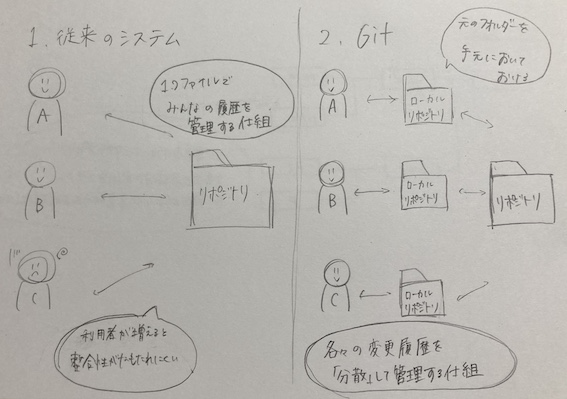

gitとは、分散型バージョン管理システムのことである。
gitは、オフラインでもプログラムの編集ができ、その変更履歴なども管理できる。
gitの開発者は、リーナス・トーバルズ氏である。
・開発由来
git開発前は、資料編集の際に編集作業する前の状態に戻るためには、いちいち区切りのいい場所で保存する必要がありました。しかし、その方法では、資料の量が多くなったり、グループワークで資料を共有しようとするときにファイルを見つけづらかったり、うまく変更内容が記録されなかったりと、スムーズに作業を行えないという状況でした。
そんな不便な状況を効率化するために作られたのがgitです。

・できること
- ファイルの変更履歴が管理できる
- 過去のファイルに戻せる
- プログラムのソースコードだけでなく、Excelファイルや画像など様々なファイルを管理できる
- チームで共有できる
・使う場面
・参考文献
SMURAI ENGINEER blog
2.htmlについて
htmlは、"Hyper Text Markup Language"の略称で、WEBページを作成するための言語のことである。
htmlを日本語で表すと、「ハイパーテキスト⑴に目印をつける言語」という意味になる。
※１ ハイパーテキストとは、ハイパーリンク⑵を埋め込むことができる高機能なテキストのこと。
※２ ハイパーリンクとは、下線部のついたテキストなどをクリックすると別のページに移動する、リンクのことである。
html文書では、ヘッド部分とボディ部分を合わせた全体を＜html＞〜＜/html＞で囲むことで、この文章がhtml文書であることを定義している。
html要素はルート要素と呼ばれ、文書の根っこにあたり、そこからボディ要素やヘッド要素などにどんどん細かい要素へと枝分かれしている。